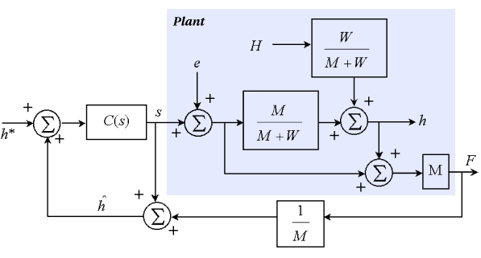

|
You are here : Control System Design - Index | Simulations | Rolling Mill | Part 4 Rolling Mill Tutorial - Part 4The sinusoidal variations in exit thickness are due to the fact that the rolls are not perfectly round, but contain various "bumps" or imperfections. These imperfections are known as the eccentricity of the roll. Eccentricity is a periodic signal, since it will repeat each time the roll completes a revolution. This periodic signal can be expressed as a Fourier series (i.e. in terms of sinewaves). For simplicity, the eccentricity was modelled as a single sinewave in the simulations (which corresponds to an elliptic roll). The model of the system can then be modified to include the effect of eccentricity. The eccentricity signal e is defined such that a positive value indicates that the roll is wider than normal. Thus, when the roll is wider, the force on the roll will increase, since F = M ( h - s + e ) We then find that the exit thickness is given by
Note that the eccentricity signal is attenuated by a factor of  This has severe implications for the BISRA gauge, since the estimated exit thickness is actually
So the controller thinks that the eccentricity variations are disturbances in the output and compensates for them. This explains why the eccentricity appears unattenuated on the output of the system. Next, we look at the use of a Kalman filter (another "virtual sensor", "soft sensor" or "observer") to estimate the eccentricity and remove it from the thickness measurement. |